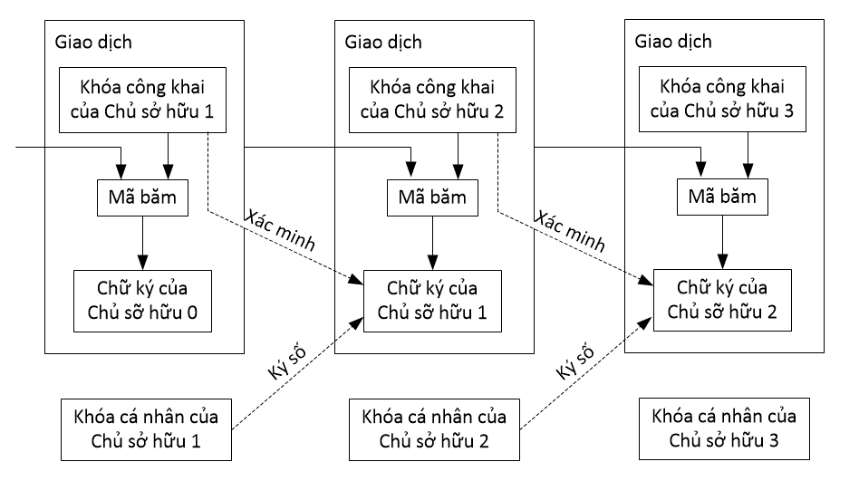
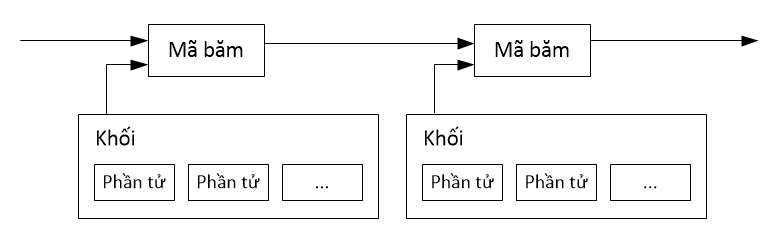
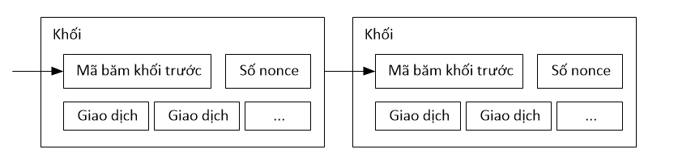
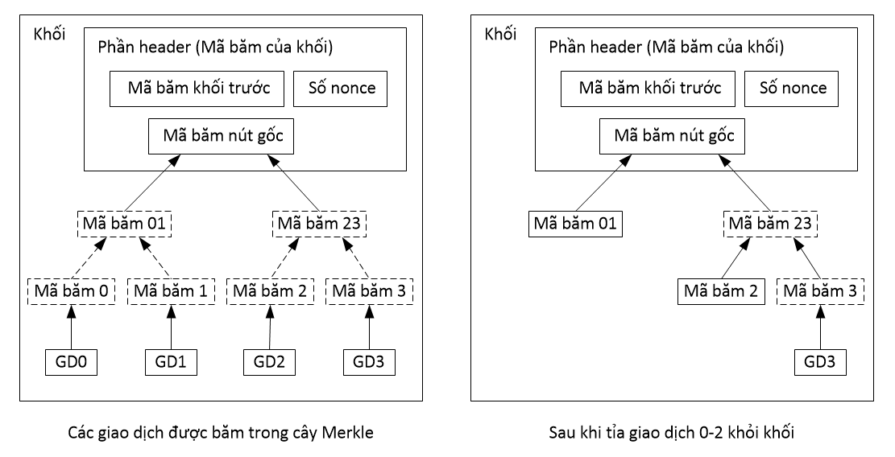
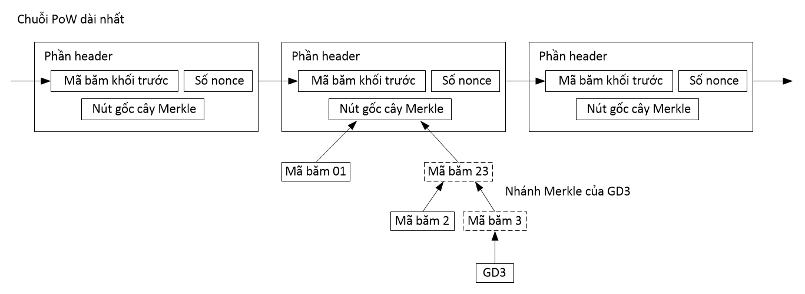
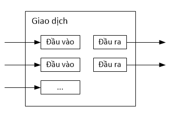
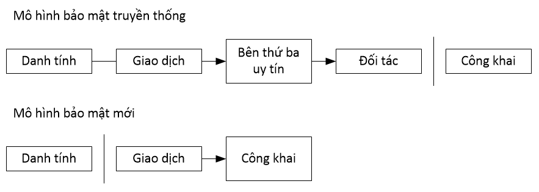
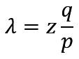
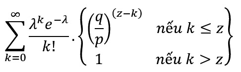
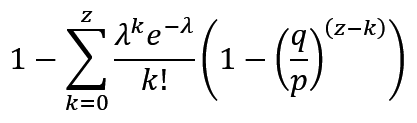

Bitcoin: Hệ thống tiền điện tử ngang hàng
Satoshi Nakamoto
satoshin@gmx.com
www.bitcoin.org
Tóm tắt. Một phiên bản thuần ngang hàng của tiền điện tử là phiên bản cho phép việc thanh toán online được thực hiện trực tiếp giữa hai bên mà không cần thông qua một tổ chức tài chính nào. Dù chữ ký số là một phần của giải pháp, nhưng nếu chúng ta vẫn cần một bên thứ ba có uy tín giúp ngăn ngừa việc lặp chi thì chúng ta vẫn không đạt được các lợi ích cốt lõi. Tài liệu này đề xuất giải pháp giải quyết vấn đề lặp chi bằng cách sử dụng mạng ngang hàng. Mạng ngang hàng này sẽ đóng mộc thời gian lên các giao dịch bằng cách băm chúng rồi nối chúng vào một chuỗi các bằng-chứng-giải-quyết-công-việc; sau đó tổ chức việc ghi chép sao cho các giao dịch không thể bị chỉnh sửa trừ phi phải tính toán lại bằng-chứng-giải-quyết-công-việc. Chuỗi bằng-chứng-giải-quyết-công-việc dài nhất không chỉ được xem như bằng chứng về một chuỗi các sự kiện đã được chứng thực, mà còn là bằng chứng rằng nó bắt nguồn từ nơi có nguồn lực CPU lớn nhất. Miễn là những node không có ý định phối hợp tấn công mạng lưới vẫn kiểm soát phần nguồn lực CPU lớn nhất, thì chúng vẫn sẽ tạo ra chuỗi dài nhất, nhanh hơn những kẻ tấn công. Mạng ngang hàng này chỉ cần cấu trúc tối thiểu. Các node tùy theo năng lực của mình mà lan truyền các thông điệp; node có thể rời bỏ hoặc gia nhập lại mạng lưới bất kỳ thời điểm nào, miễn chấp nhận rằng chuỗi bằng-chứng-giải-quyết-công-việc dài nhất là bằng chứng cho những gì đã diễn ra trong lúc nó tạm rời bỏ.
1. Giới thiệu
Trên Internet, việc buôn bán đang dần đi đến phụ thuộc hoàn toàn vào các tổ chức tài chính, xem các tổ chức này là một bên trung gian thứ ba đủ uy tín để xử lý việc thanh toán online. Mặc dù mô hình này đang đáp ứng tốt cho hầu hết các giao dịch online, nó vẫn ẩn chứa các điểm yếu vốn có của một mô hình dựa trên sự tin cậy. Mô hình này không có khả năng cung cấp các giao-dịch-không-thể-đảo-ngược một cách hoàn hảo bởi bên thứ ba không thể tránh khỏi việc phải giải quyết tranh chấp. Chi phí làm trung gian giải quyết tranh chấp làm tăng chi phí giao dịch, giới hạn giá trị tối thiểu của giao dịch và làm mất đi cơ hội thực hiện các giao dịch nhỏ, và sẽ còn nhiều chi phí khác làm mất đi khả năng cung cấp các giao-dịch-không-thể-đảo-ngược để thanh toán cho các dịch-vụ-không-thể-đảo-ngược. Do giao dịch có khả năng bị đảo ngược nên nhu cầu về sự tin cậy tăng lên. Bên bán hàng phải đề phòng khách hàng bằng cách phiền họ cung cấp nhiều thông tin hơn mức cần thiết. Gian lận được xem là không thể tránh khỏi và họ đành chấp nhận một tỷ lệ gian lận nhất định. Những chi phí này cùng với sự không chắc chắn trong thanh toán có thể tránh được bằng cách sử dụng tiền vật lý nhưng hiện nay chưa có cơ chế nào để việc thanh toán trên các kênh online không cần đến một bên trung gian.
Điều chúng ta cần chính là một hệ thống thanh toán điện tử dựa trên các bằng chứng mật mã học thay vì dựa trên sự tin cậy, cho phép hai bên bất kỳ có thể giao dịch trực tiếp với nhau mà không cần một bên trung gian uy tín nào. Việc giao dịch không thể bị đảo ngược sẽ giúp bên bán không bị gian lận; còn các thỏa thuận ký quỹ sẽ giúp bảo vệ bên mua (các cơ chế cho thỏa thuận ký quỹ thì dễ hiện thực hóa). Trong tài liệu này, chúng tôi đề xuất một giải pháp giải quyết vấn đề lặp chi sử dụng máy chủ đóng mộc thời gian phân tán và ngang hàng để tạo ra các bằng chứng – cũng được tạo bằng máy tính – về trình tự thời gian của các giao dịch. Hệ thống sẽ an toàn miễn sao các node trung thực cùng nhau kiểm soát nhiều năng lực CPU hơn bất kỳ các node tấn công nào.
2. Giao dịch
Chúng ta định nghĩa một đồng điện tử là một chuỗi các chữ ký số. Chủ sở hữu sẽ chuyển giao đồng tiền đó cho người tiếp theo bằng cách ký (ký số) vào cặp: mã băm của giao dịch trước và khóa công khai của người chủ tiếp theo; rồi đặt những thứ này vào cuối đồng tiền. Người nhận tiền có thể xác minh tất cả các chữ ký để biết chuỗi các chủ sở hữu.
Dĩ nhiên người nhận không thể xác minh rằng một chủ sở hữu nào đó trong chuỗi sỡ hữu đã không chi tiêu hai lần đồng tiền đó. Một giải pháp thường thấy là tạo ra một cơ quan trung ương uy tín, hay xưởng in tiền; cơ quan này sẽ kiểm tra từng giao dịch để phát hiện vấn đề lặp chi. Cứ sau mỗi một giao dịch, đồng tiền phải quay về xưởng để xưởng lại phát hành một đồng tiền mới; và chỉ những đồng tiền do xưởng phát hành trực tiếp mới đáng tin cậy, rằng nó không bị lặp chi. Vấn đề của giải pháp này là sinh mệnh của toàn bộ hệ thống tiền tệ này lệ thuộc vào công ty vận hành xưởng in tiền, trong đó mọi giao dịch đều phải đi qua họ, giống ngân hàng vậy.
Chúng ta cần cung cấp cách thức để bên nhận tiền biết rằng các chủ sở hữu phía trước không ký thêm bất kỳ giao dịch nào ở thời điểm sớm hơn. Vì nhiều mục đích, giao dịch có thời gian sớm nhất sẽ là giao dịch được chọn, như vậy chúng ta sẽ bỏ qua những toan tính lặp chi có thời gian trễ hơn. Để biết chắc rằng một giao dịch không hiện hữu, cách duy nhất là xem xét toàn bộ các giao dịch. Trong mô hình xưởng in tiền, xưởng sẽ phải xem xét tất cả các giao dịch và quyết định giao dịch nào đến trước. Để thỏa mãn yêu cầu này mà không cần đến một cơ quan uy tín, thì các giao dịch phải được công bố công khai [1], và chúng ta cần một hệ thống sao cho các bên tham gia có thể đồng ý về một trình tự thời gian mà các giao dịch đã được tiếp nhận. Bên nhận tiền cần bằng chứng rằng tại thời điểm của mỗi giao dịch, phần đông các node đều đồng ý rằng nó là giao dịch được tiếp nhận đầu tiên.
3. Máy chủ đóng mộc thời gian
Giải pháp mà chúng tôi đề xuất sẽ bắt đầu với máy chủ đóng mộc thời gian. Máy chủ này hoạt động bằng cách tính mã băm của một khối các phần tử cần đóng mộc rồi công bố rộng rãi mã băm đó trên báo chí hoặc mạng Usenet [2-5]. Dấu mộc thời gian là bằng chứng chứng minh rõ ràng rằng dữ liệu đã tồn tại vào thời điểm đó, do đó chúng mới được đưa vào mã băm. Mã băm của một dấu mộc bao gồm cả dấu mộc trước đó; do đó hình thành nên một chuỗi các khối; và với mỗi dấu mộc thêm mới phía sau sẽ củng cố những dấu mộc phía trước nó.
4. Bằng-chứng-giải-quyết-công-việc
Để hiện thực một máy chủ đóng mộc thời gian phân tán trên một mạng ngang hàng cơ bản, thay vì dùng báo chí hay mạng Usenet, chúng ta dùng hệ thống bằng-chứng-giải-quyết-công-việc (PoW) tương tự như hệ thống Hashcash [6] của Adam Back. Nhiệm vụ của PoW bao gồm việc tìm kiếm một con số mà khi được băm (chẳng hạn bằng thuật toán băm SHA-256) thì mã băm của nó phải có một lượng bit zero ở vị trí đầu mã. Như vậy, khối lượng trung bình công việc cần giải quyết sẽ tăng theo một hàm mũ với biến số là số bit zero; và kết quả công việc này có thể được kiểm chứng bằng cách chỉ cần tính lại một lần băm.
Đối với mạng lưới đóng mộc thời gian của chúng ta, chúng ta sẽ hiện thực PoW bằng cách tăng dần số nonce trong khối cho đến khi tìm được một giá trị mà giá trị này sẽ làm cho mã băm của khối có số lượng bit zero theo yêu cầu. Một khi một lượng năng lực CPU đã được bỏ ra để thỏa mãn PoW, thì một khối không thể bị thay đổi mà không phải làm lại công việc trên. Và bởi vì các khối trễ hơn sẽ được thêm vào phía sau, nên khối lượng công việc cần để thay đổi một khối còn bao gồm việc làm lại tất cả công việc của các khối đứng sau.
Trong mô hình ra quyết định dựa theo quy tắc đa số, việc xác định phe đa số cũng được giải quyết bởi PoW. Nếu quy tắc đa số được đếm dựa theo luật “một địa chỉ IP, một phiếu bầu”, thì nó có thể bị phá vỡ bởi bất kỳ ai có cách định danh nhiều địa chỉ IP. Về căn bản, PoW là “một CPU, một phiếu bầu”. Kết quả biểu quyết của đa số chính là chuỗi dài nhất, cũng là chuỗi được đầu tư công sức PoW lớn nhất. Nếu đa số sức mạnh CPU được kiểm soát bởi các node trung thực, thì chuỗi trung thực sẽ tăng trưởng nhanh nhất và nhanh hơn bất kỳ các chuỗi cạnh tranh nào. Để chỉnh sửa một khối cũ, kẻ tấn công sẽ phải tạo lại các PoW của khối đó và tất cả các khối sau nó để bắt kịp rồi vượt qua khối lượng công việc mà các node trung thực đang làm. Ở phần sau, chúng ta sẽ chứng minh rằng xác xuất để một kẻ tấn công (đang đi chậm hơn chuỗi chính) có thể bắt kịp sẽ giảm dần theo cấp số mũ khi các khối tiếp theo được thêm.
Để bù cho tốc độ phần cứng ngày càng nhanh và để điều tiết lợi ích của các node theo từng thời điểm, độ khó của PoW được xác định bằng đường trung bình động dựa theo trung bình số khối phát sinh trong một giờ. Nếu các khối được phát sinh quá nhanh, độ khó sẽ tăng lên.
5. Mạng lưới
Các bước để vận hành mạng lưới như sau:
- Các giao dịch mới được thông báo và gửi đến toàn bộ các node.
- Mỗi node thu nhặt những giao dịch mới này vào thành một khối.
- Mỗi node làm việc để tìm ra PoW cho khối của nó.
- Khi một node tìm thấy PoW, nó thông báo và gửi khối đến tất cả các node.
- Các node còn lại chấp nhận khối nếu toàn bộ giao dịch trong khối là hợp lệ và không lặp chi.
- Các node thể hiện sự chấp nhận bằng cách tiếp tục công việc tạo khối mới tiếp theo trên chuỗi, trong đó lấy mã băm của khối vừa được chấp nhận làm “mã băm khối trước” của khối mới.
Các node luôn xem chuỗi dài nhất là chuỗi chính và luôn làm việc trên chuỗi này. Nếu hai (hay nhiều) node cùng một lúc gửi hai (hay nhiều) phiên bản khác nhau của khối kế tiếp, thì vài node sẽ nhận phiên bản này trước hoặc phiên bản kia trước. Trong trường hợp này, mỗi node sẽ chọn làm việc với khối đầu tiên mà chúng nhận nhưng vẫn sẽ lưu nhánh còn lại phòng trường hợp nhánh đó trở nên dài hơn. Tình trạng này sẽ biến mất khi PoW kế tiếp được tìm thấy và một nhánh trở nên dài hơn nhánh kia; khi đó, các node đang làm việc với nhánh kia sẽ chuyển sang nhánh dài hơn.
Các giao dịch mới không nhất thiết phải được thông báo và gửi đến toàn bộ các node. Ngay khi chúng đến được nhiều node, chúng sẽ nhanh chóng được đưa vào một khối. Và tương tự với khối. Việc thông báo và gửi các khối cũng không cần toàn vẹn. Nếu một node không nhận được một khối, thì khi nhận được khối tiếp theo, node sẽ nhận ra rằng có một khối bị thiếu và node sẽ yêu cầu lại khối đó.
6. Các động lực
Theo quy ước, trong một khối, giao dịch đầu tiên là giao dịch đặc biệt: nó khởi đầu một đồng tiền mới, với quyền sở hữu thuộc về người tạo ra khối đó. Điều này tạo động lực khích lệ các node mới tham gia mạng lưới; đồng thời cũng là cách đưa thêm tiền vào lưu thông vì mạng lưới không có cơ quan trung ương để phát hành tiền. Việc các đồng tiền mới được thêm đều đặn vào lưu thông cũng tương tự như việc các thợ đào vàng tiêu tốn nguồn lực của họ để đưa thêm vàng vào lưu thông. Trong trường hợp của chúng ta, nguồn lực tiêu tốn là điện năng và thời gian sử dụng CPU.
Một động lực khác là phí giao dịch. Nếu giá trị đầu ra của một giao dịch nhỏ hơn giá trị đầu vào thì độ chênh lệch này là phí giao dịch; phí này được cộng dồn vào phần tiền thưởng cho việc tạo ra khối chứa giao dịch đó. Và khi toàn bộ lượng tiền được đưa hết vào lưu thông thì động lực tham gia mạng lưới sẽ đến từ phí giao dịch và từ việc không còn lạm phát.
Các khoản tiền thưởng cũng khích lệ các node trở nên trung thực. Nếu một kẻ tham lam có khả năng tập hợp nhiều năng lực CPU hơn các node trung thực, kẻ đó hẳn sẽ cân nhắc giữa việc sử dụng năng lực đó để gian dối người khác bằng cách lấy lại số tiền mà hắn ta đã thanh toán trước đó; hoặc sử dụng năng lực đó để tạo ra đồng tiền mới. Kẻ đó hẳn nhận ra rằng hắn ta sẽ nhận được nhiều lợi ích hơn bằng cách tuân thủ luật chơi – là luật ưu đãi cho hắn ta nhiều đồng tiền mới hơn so với tập hợp những người còn lại – hơn là hủy hoại hệ thống cũng như sự giàu có vững chắc của bản thân.
7. Lấy lại dung lượng ổ đĩa
Một khi giao dịch mới nhất của một đồng bị chôn vùi đủ sâu dưới các khối, thì các giao dịch chi tiêu phía trước có thể được bỏ qua để tiết kiệm không gian đĩa. Để đạt được điều này mà không làm hỏng mã băm của khối, các giao dịch sẽ được băm theo cấu trúc cây Merkle [7][2][5]; và nút gốc của cây sẽ được bao gồm trong mã băm của khối. Khi này có thể nén các khối cũ bằng cách tỉa bớt các nhánh của cây Merkle. Các mã băm bên trong không cần được lưu.
Phần header của một khối (phần này không chứa các giao dịch của khối) có kích thước khoảng 80 bytes. Nếu giả định rằng các khối được tạo ra sau mỗi 10 phút, thì 80 bytes * 6 * 24 * 365 = 4,2 MB cho mỗi năm. Với một chiếc máy tính tiêu chuẩn năm 2008 có 2GB RAM, và định luật Moore dự đoán mức tăng trưởng hiện nay là 1.2GB mỗi năm, thì thiết bị lưu trữ sẽ không phải là vấn đề ngay cả khi chúng ta cần phải nạp hết phần header của các khối vào bộ nhớ.
8. Cách xác minh thanh toán đơn giản
Người dùng có thể xác minh các giao dịch thanh toán mà không cần sở hữu một node đầy đủ của mạng lưới. Người dùng chỉ cần có bản sao của tất cả các header của khối của chuỗi PoW dài nhất – anh ta có được chuỗi này bằng cách truy vấn các node cho đến khi bị thuyết phục rằng chuỗi mà anh ta vừa nhận được là chuỗi dài nhất – và lấy về nhánh cây Merkle kết nối giao dịch đó với khối đã được đóng mộc thời gian. Anh ta sẽ không thể lấy thông tin giao dịch đó ra để tự kiểm tra, nhưng bằng cách kết nối nó đến một vị trí trong chuỗi, anh ta có thể nhìn thấy rằng có một node trong mạng lưới đã chấp nhận nó và các khối phía sau khối đó cũng xác nhận thêm rằng mạng lưới đã chấp nhận nó.
Như vậy, quá trình xác minh vẫn đáng tin cậy nếu mạng lưới vẫn được các node trung thực kiểm soát; nhưng sẽ dễ bị tổn thương nếu mạng lưới đang bị kẻ xấu chế ngự. Trong khi một node đầy đủ có thể tự xác minh giao dịch cho chính nó, thì phương pháp đơn giản này có thể bị các giao dịch bịa đặt của kẻ tấn công đánh lừa, miễn là kẻ tấn công vẫn còn có thể chế ngự mạng lưới. Một chiến lược để giải quyết tình trạng này là lắng nghe cảnh báo từ các node khi chúng nhận diện được một khối không hợp lệ và thúc giục phần mềm của người dùng tải về khối đầy đủ lẫn các giao dịch đang bị cảnh báo để xác nhận tình trạng không nhất quán. Những doanh nghiệp nào có nhiều giao dịch thanh toán thì nên tự vận hành một node để tự chủ vấn đề bảo mật và để tự xác minh giao dịch nhanh hơn.
9. Kết hợp và chia tách giá trị
Mặc dù có thể xử lý từng đồng tiền riêng lẻ, nhưng sẽ cồng kềnh nếu tạo riêng từng giao dịch cho mỗi đồng xu riêng lẻ khi chuyển tiền. Để cho phép một giá trị có thể chia tách hoặc kết hợp, thì mỗi giao dịch sẽ có nhiều đầu vào và nhiều đầu ra. Thông thường, một giao dịch sẽ có: hoặc một đầu vào tham chiếu từ giao dịch lớn trước đó, hoặc nhiều đầu vào là kết hợp từ những lượng nhỏ hơn; và không nhiều hơn hai đầu ra: một cho việc thanh toán và một cho việc trả lại phần dư cho người gửi nếu có.
Cũng nên chú ý rằng tình huống fan-out (là tình huống một giao dịch phụ thuộc vào rất nhiều giao dịch và những giao dịch này phụ thuộc và nhiều giao dịch nữa) không phải là vấn đề. Việc trích một bản sao lịch sử của giao dịch – sao cho bản sao đó hoàn chỉnh và độc lập – không bao giờ là cần thiết.
10. Tính riêng tư
Mô hình ngân hàng truyền thống đạt được độ bảo mật cao bằng cách hạn chế quyền truy xuất thông tin của các bên liên quan cũng như bên thứ ba uy tín. Tuy nhiên, cách này không thể áp dụng vì hệ thống đang yêu cầu phải công khai tất cả giao dịch; nhưng tính bảo mật vẫn có thể có được bằng cách gây cản trở luồng thông tin theo cách khác: ẩn danh khóa công khai. Ai cũng có thể thấy có một ai đó gửi một lượng tiền cho ai đó khác, nhưng họ không có thông tin kết nối giao dịch này với bất cứ người nào. Cách này tương tự mức độ công bố thông tin của sàn chứng khoán: chỉ có thời gian và khối lượng của các giao dịch chứng khoán được công khai, còn danh tính các bên tham gia thì không.
Có thể xây thêm một tường rào nữa bằng cách cứ mỗi giao dịch thì tạo cặp khóa mới để chúng khỏi kết nối đến cùng một chủ sở hữu. Tuy nhiên, đối với các giao dịch nhiều đầu vào, tính kết nối là không thể tránh được, vì tất yếu, nó sẽ cho thấy rằng các đầu vào của giao dịch thuộc về một chủ sở hữu. Rủi ro của cách này là: nếu chủ sở hữu của một khóa bị lộ, thì mối liên kết cũng làm lộ các giao dịch khác mà những giao dịch khác này thuộc cùng chủ sở hữu.
11. Tính toán
Chúng ta hãy xem xét tình huống sau: kẻ tấn công cố gắng tạo ra một chuỗi khác nhanh hơn chuỗi trung thực. Ngay cả khi hắn có thể làm được điều này, thì cũng không khiến cho hệ thống trở nên dễ bị thay đổi tùy tiện, chẳng hạn như xuất hiện những đồng tiền từ trên trời rơi xuống hoặc lấy trộm những đồng tiền chưa từng thuộc về hắn ta. Các node sẽ không chấp nhận một giao dịch thanh toán bất hợp lệ và các node trung thực sẽ không bao giờ chấp nhận khối có chứa giao dịch đó. Kẻ tấn công chỉ có thể cố gắng sửa một trong những giao dịch của hắn ta để lấy lại số tiền mà hắn ta vừa chi tiêu.
Cuộc đua giữa chuỗi trung thực và chuỗi của kẻ tấn công có thể mô tả thành bài toán về Bước đi ngẫu nhiên nhị thức. Trong đó, sự kiện thành công là sự kiện chuỗi trung thực được mở rộng thêm một khối, gia tăng sự dẫn đầu của nó lên +1 và sự kiện thất bại là sự kiện chuỗi tấn công mở rộng thêm một khối, giảm khoảng sai lệch xuống -1.
Xác suất để kẻ tấn công bắt kịp từ một khoảng cách cho trước tương tự như bài toán về Sự phá sản của con bạc. Giả sử một con bạc có số tiền vô hạn bắt đầu chơi ở mức thua lỗ nào đó và sẽ chơi không bị giới hạn để đạt tới điểm hòa vốn. Chúng ta có thể tính được xác suất con bạc có thể hòa vốn, cũng giống xác suất mà kẻ tấn công có thể bắt kịp chuỗi trung thực, như dưới đây [8]:
- p: xác suất một node trung thật tìm thấy khối tiếp theo
- q: xác suất kẻ tấn công tìm thấy khối tiếp theo
- qz: xác suất kẻ tấn công có thể bắt kịp từ khoảng cách z khối ít hơn
Giả định rằng p > q, xác xuất bắt kịp sẽ giảm theo hàm mũ khi số khối mà kẻ tấn công phải bắt kịp tăng lên. Trong điều kiện bất lợi như thế, nếu ngay từ đầu kẻ tấn công không lao về phía trước thật nhanh thì cơ hội của hắn sẽ tiêu tan dần khi ngày càng bị tụt sâu về phía sau.
Bây giờ, chúng ta hãy xem xét xem bên nhận của một giao dịch phải đợi mất bao lâu thì có thể chắc chắn rằng bên gửi không thể sửa đổi giao dịch đó. Chúng ta giả định rằng bên gửi là kẻ tấn công; hắn ta muốn làm cho bên nhận tin rằng hắn đã trả tiền, rồi khi thời gian trôi qua một lúc thì lật ngược lại, tự trả tiền lại cho chính hắn. Bên nhận sẽ nhận được cảnh báo khi điều đó xảy ra, nhưng bên gửi hi vọng rằng đến lúc đó thì đã quá trễ.
Bên nhận tạo ra cặp khóa mới và đưa khóa công khai cho bên gửi ngay trước khi ký. Điều này sẽ ngăn bên gửi không thể chuẩn bị sẵn một chuỗi các khối (họ có thể chuẩn bị bằng cách làm việc liên tục cho đển khi đủ may mắn để đi đủ xa), rồi thực hiện giao dịch tại thời điểm đó. Một khi giao dịch được gửi, người gửi không trung thực bắt đầu bí mật làm việc trên chuỗi song song chứa một phiên bản thay thế giao dịch của hắn ta.
Bên nhận chờ đến khi giao dịch được thêm vào một khối và khối đó có z khối nữa nối vào phía sau. Anh ta sẽ không biết chính xác tiến độ của kẻ tấn công nhưng giả định rằng các khối trung thực chỉ tiêu tốn một lượng thời gian bằng thời gian mong đợi trung bình cho mỗi khối, tiến độ có thể có của kẻ tấn công sẽ là một phân phối Poisson với giá trị kỳ vọng là:
Để lấy được xác suất kẻ tấn công có thể vẫn bắt kịp từ bây giờ, chúng ta nhân mật độ Poisson của mỗi lượng tiến độ mà anh ta có thể có với xác suất anh ta có thể bắt kịp tính từ điểm đó.
Biến đổi biểu thức để loại bỏ tổng đầu cuối của phân phối…
Chuyển sang mã ngôn ngữ C
#include <math.h>
double AttackerSuccessProbability(double q, int z)
{
double p = 1.0 - q;
double lambda = z * (q / p);
double sum = 1.0;
int i, k;
for (k = 0; k <= z; k++)
{
double poisson = exp(-lambda);
for (i = 1; i <= k; i++)
poisson *= lambda / i;
sum -= poisson * (1 - pow(q / p, z - k));
}
return sum;
}
Chạy thực tế vài trường hợp để chúng ta thấy xác xuất sụt giảm theo hàm mũ của biến z
q=0.1
z=0 P=1.0000000
z=1 P=0.2045873
z=2 P=0.0509779
z=3 P=0.0131722
z=4 P=0.0034552
z=5 P=0.0009137
z=6 P=0.0002428
z=7 P=0.0000647
z=8 P=0.0000173
z=9 P=0.0000046
z=10 P=0.0000012
q=0.3
z=0 P=1.0000000
z=5 P=0.1773523
z=10 P=0.0416605
z=15 P=0.0101008
z=20 P=0.0024804
z=25 P=0.0006132
z=30 P=0.0001522
z=35 P=0.0000379
z=40 P=0.0000095
z=45 P=0.0000024
z=50 P=0.0000006
Với P nhỏ hơn 0.1% ...
P < 0.001
q=0.10 z=5
q=0.15 z=8
q=0.20 z=11
q=0.25 z=15
q=0.30 z=24
q=0.35 z=41
q=0.40 z=89
q=0.45 z=340
12. Kết luận
Chúng tôi vừa đề xuất một hệ thống giao dịch điện tử không dựa trên sự tin cậy. Chúng tôi bắt đầu bằng bộ khung thông thường của đồng tiền: bộ khung được hình thành từ chữ ký số. Chữ ký số đã cung cấp năng lực mạnh mẽ về tính sở hữu, nhưng chưa hoàn chỉnh vì không có cách ngăn chặn tình trạng lặp chi. Để giải quyết điều này, chúng tôi đề xuất một mạng ngang hàng sử dụng PoW để ghi chép thành một dòng lịch sử các giao dịch công khai và dòng lịch sử này mau chóng trở nên không khả thi về mặt tính toán nếu một kẻ xấu muốn sửa đổi nó, miễn sao các node trung thực vẫn còn kiểm soát đa số năng lực CPU. Mạng lưới này mạnh mẽ và vững chắc dù nó đơn giản và phi cấu trúc. Các node cùng làm việc với nhau và cần rất ít tương tác. Chúng không cần định danh vì các thông điệp không cần định tuyến đến bất kỳ node cụ thể nào và các thông điệp chỉ cần được phân phối trong khả năng của node. Các node cũng có thể rời bỏ hay tái gia nhập mạng lưới bất cứ khi nào nó muốn, khi tái gia nhập, các node chấp nhận chuỗi PoW như là bằng chứng về những gì đã xảy ra trong lúc nó vắng mặt. Các node bỏ phiếu bằng sức mạnh CPU, biểu đạt sự chấp thuận các khối hợp lệ bằng cách làm việc và mở rộng chuỗi và từ chối khối không hợp lệ bằng cách không làm việc với chúng. Bất kỳ luật lệ hay động lực thúc đẩy nào nếu cần thiết đều có thể được thi thành với cơ chế đồng thuận này.
Tài liệu tham khảo
- W. Dai, "b-money," http://www.weidai.com/bmoney.txt, 1998.
- H. Massias, X.S. Avila, and J.-J. Quisquater, "Design of a secure timestamping service with minimal trust requirements," In 20th Symposium on Information Theory in the Benelux, May 1999.
- S. Haber, W.S. Stornetta, "How to time-stamp a digital document," In Journal of Cryptology, vol 3, no 2, pages 99-111, 1991.
- D. Bayer, S. Haber, W.S. Stornetta, "Improving the efficiency and reliability of digital time-stamping," In Sequences II: Methods in Communication, Security and Computer Science, pages 329-334, 1993.
- S. Haber, W.S. Stornetta, "Secure names for bit-strings," In Proceedings of the 4th ACM Conference on Computer and Communications Security, pages 28-35, April 1997.
- A. Back, "Hashcash - a denial of service counter-measure," http://www.hashcash.org/papers/hashcash.pdf, 2002.
- R.C. Merkle, "Protocols for public key cryptosystems," In Proc. 1980 Symposium on Security and Privacy, IEEE Computer Society, pages 122-133, April 1980.
- W. Feller, "An introduction to probability theory and its applications," 1957.